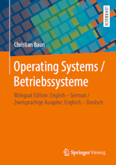

|
|
Jump to the page in German language
|


|
The main task of an operating system is the controlling, management and distribution of resources of a computer system to the users. Resources are CPUs, main memory, files, input/output devices, network services, and in general all resources, which are connected to the computer system. In addition, an operating system provides the user interface for controlling the system as well as protection mechanisms, tools, libraries and development tools. The objective of this course is to discuss the concepts, which are implemented by classic and modern operating systems. The course (lectures, exercises and exam) is held in English language. All slide sets and exercise sheets are available in English and in German language. The content of the English and German slide sets and exercise sheets is identical. The slide sets are the basis for the fifth edition of the German-language book Betriebssysteme kompakt, which was published in June 2020 by Springer Vieweg. ISBN: 978-3-662-61410-5 Also, a bilingual (English-German) edition exists - Operating Systems / Betriebssysteme, which was published in May 2020 by Springer Vieweg. ISBN: 978-3-658-29784-8 |
| Slide sets | Topics | ||
|---|---|---|---|
| Slide set 1 | Organizational information, literature, generations of computer systems and operating systems | ||
| Slide set 2 | Classifications, singletasking, multitasking, single-user, multi-user, kernel architectures | ||
| Slide set 3 | Von Neumann architecture, hardware components of a computers, CPU, computer data storage, memory hierarchy, write policies | ||
| Slide set 4 | Hard Disk Drives (HDD), Solid State Drives (SDD), Redundant Array of Independent Disks (RAID) | ||
| Slide set 5 | Memory management, real mode, protected Mode and virtual memory | ||
| Slide set 6 | Files, file systems, directories, block addressing, journaling, extents, defragmentation | ||
| Slide set 7 | Processes, process context, process state diagrams, process creation, process replacement, system calls | ||
| Slide set 8 | Interrupts, dispatcher, scheduling methods | ||
| Slide set 9 | Interprocess communication, synchronization of processes, communication between processes, cooperation of processes | ||
| Shared Memory Example | |||
| Message Queue Example | |||
| Anonymous Pipe Example | |||
| Named Pipe Example | |||
| TCP-Socket Example (Server) | |||
| TCP-Socket Example (Client) | |||
| UDP-Socket Example (Server) | |||
| UDP-Socket Example (Client) | |||
| SystemV Semaphore Example | |||
| Named POSIX Semaphore Example | |||
| Slide set 10 | Emulation, virtualization | ||
| Exercise sheets | Topics | Solutions | |||
|---|---|---|---|---|---|
| Exercise sheet 1 | Topics of slide set 1 | ||||
| Exercise sheet 2 | Topics of slide set 2 | ||||
| Exercise sheet 3 | Topics of slide set 3 | ||||
| Exercise sheet 4 | Topics of slide set 4 | ||||
| Exercise sheet 5 | Topics of slide set 5 | ||||
| Exercise sheet 6 | Topics of slide set 6 | ||||
| Exercise sheet 7 | Topics of slide set 7 | ||||
| Exercise sheet 8 | Topics of slide set 8 | ||||
| Exercise sheet 9 | Topics of slide set 9 | ||||
| Exercise sheet 10 | Topics of slide set 10 | ||||
This documentation is not sufficient to solve all practical exercises of the exercise sheets, but it may assist you with your first steps in Linux system administration and shell programming. The documentation itself is not relevant for the exam but the practical exercises of the exercise sheets are relevant for the exam.
| Linux und Shell-Programmierung - Teil 1 | Organisatorisches, Einführung, Hilfesystem, Verzeichnisse, Dateien |
| Linux und Shell-Programmierung - Teil 2 | Systemverwaltung, Zugriffsrechte, Verweise, Dateien durchsuchen, Editoren, Prozesse |
| Linux und Shell-Programmierung - Teil 3 | Datum und Uhrzeit, Ein-/Ausgaben umleiten, Zeichen zählen, Alias, Dateien suchen, Kommandos zeitsteuern |
| Linux und Shell-Programmierung - Teil 4 | Ressourcen überwachen, Sortieren, Umgebungsvariablen, Textausgaben, Mustervergleiche, Texte auswerten |
| Linux und Shell-Programmierung - Teil 5 | Grundlagen der Shell und von Shell-Skripten, Vergleichsoperationel, Kontrollstrukturen, Schleifen |
| Linux und Shell-Programmierung - Teil 6 | Arithmetik auswerten, Funktionen, Funktionsbibliotheken, Auswahlmenüs |
| Semester | Exams | Time limit | University | Sample solutions | ||
|---|---|---|---|---|---|---|
| WS2021 | 90 Minutes | Frankfurt UAS | ||||
| WS1920 | 90 Minutes | Frankfurt UAS | ||||
| SS2019 | 90 Minutes | Frankfurt UAS | ||||
| WS1617 | 90 Minutes | Frankfurt UAS | ||||
| SS2016 | 90 Minutes | Frankfurt UAS | ||||
| WS1516 | 90 Minutes | Frankfurt UAS | ||||
| SS2015 | 90 Minutes | Frankfurt UAS | ||||
| WS1415 | 90 Minutes | FH Frankfurt | ||||
| SS2014 | 90 Minutes | FH Frankfurt | ||||
| WS1314 | 90 Minutes | FH Frankfurt | ||||
| WS1314 | 60 Minutes | HS Mannheim | ||||
| SS2012 | 90 Minutes | HS Darmstadt | ||||
| SS2011 | 60 Minutes | HS Mannheim | ||||
| SS2009 | 60 Minutes | HS Mannheim | ||||
| WS0809 | 60 Minutes | HS Mannheim | ||||
| SS2008 | 60 Minutes | HS Mannheim | ||||
| WS0708 | 60 Minutes | HS Mannheim | ||||
| SS2007 | 70 Minutes | HS Mannheim | ||||
The best way to reach me is via email: christianbaun@fb2.fra-uas.de
|
Prof. Dr. Christian Baun Frankfurt University of Applied Sciences (1971-2014: Fachhochschule Frankfurt am Main) Faculty of Computer Science and Engineering Last updated: October 3rd 2021 |
|